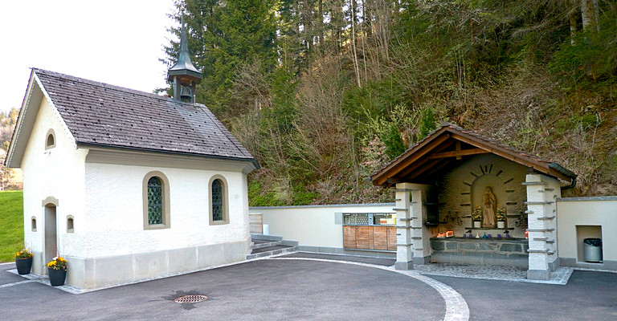
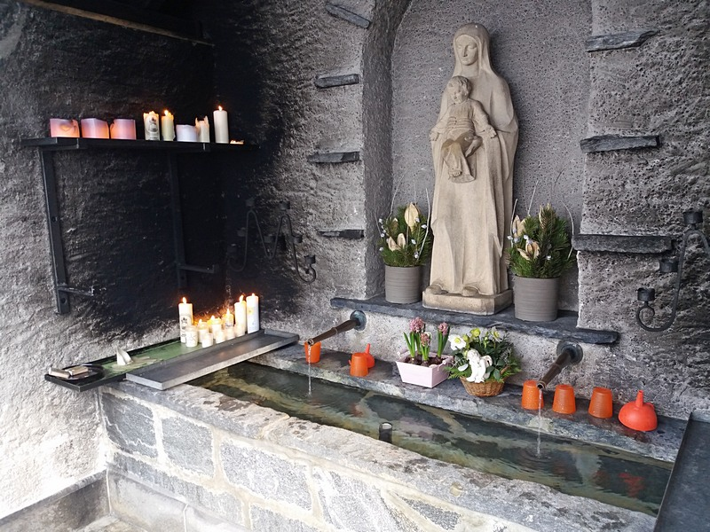

Kurz nach Huttwil geht der reformierte Kanton Bern ins katholische Luzerner Hinterland über. Wer nach fünf Kilometern in Hüswil südwärts auf die Strasse Richtung Luthern abbiegt, taucht ein in eine fast bayrisch anmutende Landschaft, die von Wiesen, Weiden, Tannenwald, Bauernhäusern, Flurkreuzen, Bildstöcken, Kapellen und Kirchen mit barockem Zwiebelturm geprägt ist. Von Luthern mit seinem schmucken Dorfbild und der stattlichen Kirche geht es weiter durch das Hügelland bis an den Fuss des Napfs. Hier befindet sich das Luthernbad, ein Wallfahrtsort mit Kirche, Kapelle und überdachtem Brunnen, aus dem heilendes Wasser sprudelt.
Das kleine Einsiedeln
Dieser abgelegene Ort verkörpert auf besondere Weise ein Stück katholischer Volksfrömmigkeit. Verehrt wird hier eine schwarze Madonna als Schirmherrin einer Heilquelle. Schwarze Madonnen gelten als besonders wundertätig; ihnen haftet etwas Geheimnisvolles, Unergründliches, fast Unheimliches an. Europaweit berühmt sind zum Beispiel die Gnadenbilder im polnischen Tschenstochau, im spanischen Guadalupe oder im italienischen Loreto. Grosse Bekanntheit geniesst auch die schwarze Madonna von Einsiedeln in der Schweiz.
Das Luthernbad ist so etwas wie eine Filiale von Einsiedeln; man apostrophiert es zuweilen als «Einsiedeln des kleinen Mannes» oder «kleines Einsiedeln». Diese Bezeichnungen sind treffend gewählt: Einsiedeln SZ, der grösste Schweizer Marien-Wallfahrtsort mit seinem bedeutenden Kloster, ist eine prachtvolle, auf Breitenwirkung bedachte Inszenierung, das Luthernbad mit seiner schlichten Wallfahrtskirche begnügt sich mit dem Status eines Wunderorts in ländlicher Abgeschiedenheit.
Die sogenannte hintere Kapelle und der Unterstand mit dem Gnadenbrunnen. (Foto: Wikimedia Commons/chrisaliv)
Sogar der Kaiser
Von der mystischen Verbindung zu Einsiedeln berichtet die Legende über die Entstehung des Luthernbads. Laut dieser Überlieferung litt der einheimische Bauer Jakob Minder zwanzig Jahre an schwerer Gicht. In der Nacht vor Pfingsten 1581 soll ihm die Gottesmutter in der Gestalt des Gnadenbilds von Einsiedeln erschienen sein. Sie riet ihm, an einer bestimmten Stelle in der Nähe seines Hauses nach Wasser zu graben und sich darin zu waschen. Der Bauer befolgte den Rat und wurde von seinem Leiden befreit. Das Wunder sprach sich herum; viele Leute kamen von nah und fern, um vom heilenden Wasser zu trinken oder eine Waschung vorzunehmen. Sogar der deutsche Kaiser sandte einen Boten ins Luthertal. Als die Quelle im Luthernbad zu fliessen begann, versiegte angeblich eine der Brunnenröhren in Einsiedeln.
Sechs Kinder starben
Ein befremdlicher Teil dieser Legende wird heute oft verschwiegen, fast ein wenig verschämt, wie es scheint. Bauer Minder war nämlich nicht nur gichtkrank, er lebte auch in materieller Not. Als er in seiner Vision die Gottesmutter von Einsiedeln sah und hörte, versprach ihm diese, seine sechs kleinen Kinder innert Jahresfrist zu versorgen. Sie hielt ihr Versprechen auf unerwartete Art: Die Kinder starben alle nacheinander in der Woche vor Weihnachten, sodass sich ihr Vater nicht mehr um sie zu kümmern brauchte. Eine seltsame, nach heutiger Vorstellung geradezu anstössige Wendung, die aber eigentlich ganz gut zur schwarzen Madonna passt – davon später mehr.
Aus zwei Röhren sprudelt das Wunderwasser in den Trog, bewacht von der Brunnenmaria. (Foto: Hans Herrmann)
Plastikbecher und Petflaschen
Der Weiler Luthernbad besteht aus der 1952 eingeweihten Wallfahrtskirche, dazu aus einer Gaststätte, einem Schulhaus und einem knappen Dutzend Häusern. Drei Minuten Fussweg von der Kirche entfernt steht die sogenannte hintere Kapelle, daneben ein kapellenartiger Unterstand mit dem wundertätigen Brunnen. Weiches und konstant fünf Grad kühles Wasser fliesst aus zwei Metallröhren in einen länglichen Steintrog. Über den Röhren wacht, in weissen Stein gehauen, die Brunnenmaria, nicht zu verwechseln mit der schwarzen Madonna in der nahen Kirche. Brennende Kerzen zu beiden Seiten des Brunnentrogs erhellen das Halbdunkel. Für die Pilgersleute stehen einige rote Plastikbecher bereit, und in einer Vitrine warten leere Petflaschen auf Käuferschaft. Ein paar Schritte neben dem Brunnenhaus und der Kapelle führt ein Zugang aus Beton und Holz ins Innere eines Hügels, wo ein sakral gestalteter Raum mit einem Wassertrog und zwei Fussbecken zu heilenden oder zumindest erfrischenden Waschungen einlädt. Mit dieser im Frühling 2018 eröffneten Kneipp-Anlage wurde etwas vom einst regen, jedoch bereits vor langer Zeit stillgelegten Badebetrieb wieder zum Leben erweckt.
Russ und Kohle?
Die Kirche, die als Wallfahrtskirche unweit von Brunnen und Kapelle erbaut wurde, beherbergt die berühmte schwarze Madonna. Das Gnadenbild steht über dem Hauptaltar in einer kreisrunden Wandnische. Marias Gesichtszüge sind unergründlich und kaum zu erkennen; auch der Jesusknabe ist von dunkler Hautfarbe. Früher versuchte man, die Entstehung schwarzer Madonnen mit Kerzenruss oder einem Kirchenbrand zu erklären; es ist jedoch auf den ersten Blick zu erkennen, dass die Schwarzfärbung der Statuen und Ikonen gewollt ist und von der Hand der Künstler stammt. Solche Bildwerke nehmen möglicherweise Bezug auf vorchristliche Muttergottheiten, die nach der Christianisierung in der Gestalt schwarzer Madonnen weiterlebten. Eine solche Göttin war Hekate, die in der Antike als Herrin der Unterwelt verehrt wurde. Sie stand für den verborgenen, dunklen und geheimnisvollen Aspekt der Sonne, die des Nachts unterirdisch das Dunkel durchwandert, um am nächsten Morgen im alten Glanz wieder sichtbar zu werden. Einer ihrer Beinamen war Melana, die Schwarze. Man opferte ihr Speisen und Hunde, offenbar zuweilen auch Menschen. Klingt in der Geschichte von Jakob Minders sechs Kindern, die von der Muttergottes «geholt» wurden, etwas von uralten Opferbräuchen an? Vielleicht, vielleicht auch nicht.
«Danke, liebe Mutter Gottes»
Jedenfalls beschränken sich heute die Opfergaben, die der schwarzen Madonna vom Luthernbad dargebracht werden, auf Votivtafeln, auf denen geheilte und vor Unheil bewahrte Menschen ihren Dank ausdrücken, zum Beispiel: «Der lieben Mutter Gottes danke ich ganz herzlich für die gute Heilung» oder «Durch Maria sind wir von einer gefährlichen Reise wieder glücklich nach Hause gekehrt». Übrigens: In der Vorhalle der Wallfahrtskirche steht eine zweite Marienstatue, jene nämlich, die vormals im alten, 1752 eingeweihten und 1950 abgebrochenen Vorgängerbau stand. Bei ihr handelt es sich verwirrenderweise nicht um eine schwarze Madonna, sondern um eine hellhäutige Muttergottes in geblümtem Barockgewand. Ist der Kult um die schwarze Madonna im Luthernbad erst in jüngerer Zeit entstanden? Oder wollte man die wahre, etwas unheimliche Identität der dunklen Quellherrin in früheren Jahrhunderten mit heller Haut und apfelroten Wangen kaschieren? Diese Fragen bleiben offen, und das ist gut so. Schliesslich ist es das Geheimnisvolle und Ungeklärte, das die Seele von «Maria Heilbronn» am Fuss des Napfs ausmacht.
Hans Herrmann ist Journalist sowie Autor von Bühnenstücken und historischen Romanen. Er leitet die Redaktion Bern der Zeitung «reformiert.».
Weitere Artikel von {{author.author}} finden Sie hier:
- {{author.location[i]}}: {{author.fulltitle[i]}} {{beitrag}}
Zur Vertiefung:
- Lothar Emanuel Kaiser, Luthertal, Kirchen und Kapellen, 2000, S. 29-39
- Renward Cysat, Das Wunder von Luthern Bad, 2015
- Thomas Lautwein, Hekate, die dunkle Göttin, 2012
- Webseite Pilgerort Luthernbad